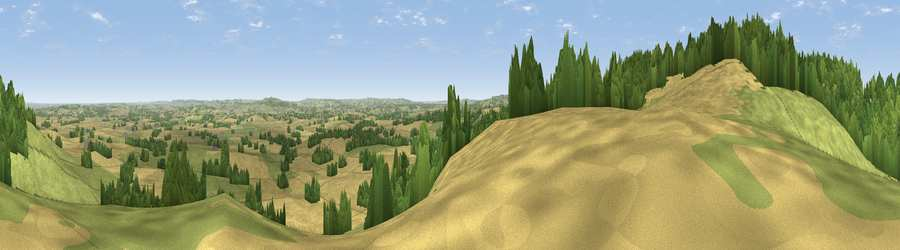

Viewpoint near Ilmington
#7707 in England · top 14% of its area beats it · near IlmingtonThe view, rendered

A 360° render of this exact spot computed from the terrain model, tree cover and land cover — summer colours, afternoon light, calibrated against photographs of famous viewpoints. Real trees, hedges and buildings will differ in detail.
The panorama
Grey silhouette: terrain skyline in each direction (720 bearings, Earth curvature and refraction included). Dashed green: skyline with trees (+15 m) and buildings (+8 m) as obstacles. Blue strip: how far the ground is visible on each bearing.
Where the view opens
Wedge length = distance to the farthest visible ground on that bearing (vegetation-aware). Rings at 10, 25 and 50 km.
What fills the view
44% grassland · 37% cropland · 19% woodland
Angular shares of the visible panorama (visual magnitude), not map area. Landscape diversity 0.46 (0–1 Shannon).
Key numbers
More beautiful places nearby
The staircase of upgrades: each row has a higher view potential than everything closer. Driving times are estimates from straight-line distance, calibrated against real road routing — check an actual route before setting out.
| Place | Direction | Drive | Score |
|---|---|---|---|
| Viewpoint near Ilmington | NNW · 1 km | ~2 min | 72.6 |
| Viewpoint near Meon Vale | NW · 5 km | ~11 min | 77.0 |
| Broadway Hill | WSW · 11 km | ~21 min | 77.7 |
| Viewpoint near Elmley Castle | W · 23 km | ~38 min | 80.5 |
| Bredon Hill | W · 25 km | ~41 min | 83.0 |
| Summer Hill | W · 44 km | ~64 min | 85.4 |
| Pinnacle Hill | W · 44 km | ~64 min | 85.7 |
| Worcestershire Beacon | W · 44 km | ~64 min | 87.1 |
52.07530, -1.69610 · source: screening · position refined by local search. Computed location — check access rights before visiting.